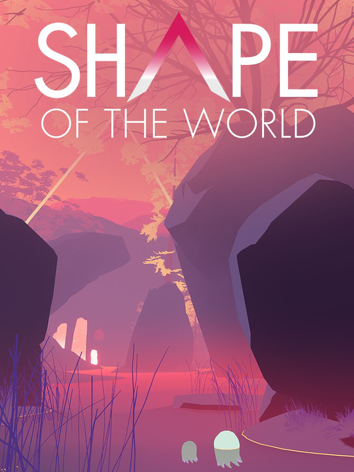

Shape of the World
Shape of the World
Details
|  | |
| Playtime | Not Played |
| Last Activity | Never |
| Added | 2/16/2022 17:42:11 |
| Modified | 2/16/2022 17:42:29 |
| Completion Status | Not Played |
| Library | Steam |
| Source | Steam |
| Platform | PC (Windows) |
| Release Date | 6/5/2018 |
| Community Score | 70 |
| Critic Score | 80 |
| User Score | |
| Genre | Casual Indie |
| Developer | Hollow Tree Games |
| Publisher | Plug In Digital |
| Feature | Single Player |
| Links | PCGamingWiki IsThereAnyDeal ProtonDB SteamDB |
| Tag | |
Description
A serene first-person explorer unfolding in a world that grows around you. Journey through a psychedelic and colorful ecosystem of flourishing flora, rambling waterfalls, burgeoning mountains, glowing monoliths and graceful creatures. A 1-3 hour escape from work, anxiety and stress..
Note: Immersion, exploration and contemplation form the core of Shape of the World. This is a place to get lost in, a relaxing world for you to spend 1 to 3 hours meandering at your own pace, observing and unwinding.

Shape of the World is an exploration game where a rich and colorful world grows around you, a relaxing and interactive escape about getting yourself pleasantly lost. Your presence is the driving force behind the procedurally populated environment amble through a dream-like forest, aquatic caves and peaceful shores.

First-person explorer:
Unwind as you wander surreal environments that beckon you to explore, hinting at distant landmarks and encouraging you to delve deeper into the woods. Travel at your own pace: no ticking clock or perils laying in wait will prevent you from enjoying your journey here.
Play with an organic and mysterious ecosystem:
Interact with graceful animals, ephemeral flora, and intriguing monoliths. Your actions will alter the world you discover in vibrant and unexpected ways, leaving you wondering what will happen with each path you forge and every hollow you stumble upon.
Procedural population:
The forest only materializes around you when you get close, and it regrows in a new way each time you pass. The game features a graphically compelling procedurally generated environment that shifts continually. What will you find when you retrace your steps?”
A dynamic soundtrack that responds to the player’s travels:
The audio shifts along with the visuals, providing an enveloping aural experience to match your psychedelic journey and amplify your immersion.


Note: Immersion, exploration and contemplation form the core of Shape of the World. This is a place to get lost in, a relaxing world for you to spend 1 to 3 hours meandering at your own pace, observing and unwinding.
Without you, will the forest still come alive?
Shape of the World is an exploration game where a rich and colorful world grows around you, a relaxing and interactive escape about getting yourself pleasantly lost. Your presence is the driving force behind the procedurally populated environment amble through a dream-like forest, aquatic caves and peaceful shores.
Game Features
First-person explorer:
Unwind as you wander surreal environments that beckon you to explore, hinting at distant landmarks and encouraging you to delve deeper into the woods. Travel at your own pace: no ticking clock or perils laying in wait will prevent you from enjoying your journey here.
Play with an organic and mysterious ecosystem:
Interact with graceful animals, ephemeral flora, and intriguing monoliths. Your actions will alter the world you discover in vibrant and unexpected ways, leaving you wondering what will happen with each path you forge and every hollow you stumble upon.
Procedural population:
The forest only materializes around you when you get close, and it regrows in a new way each time you pass. The game features a graphically compelling procedurally generated environment that shifts continually. What will you find when you retrace your steps?”
A dynamic soundtrack that responds to the player’s travels:
The audio shifts along with the visuals, providing an enveloping aural experience to match your psychedelic journey and amplify your immersion.